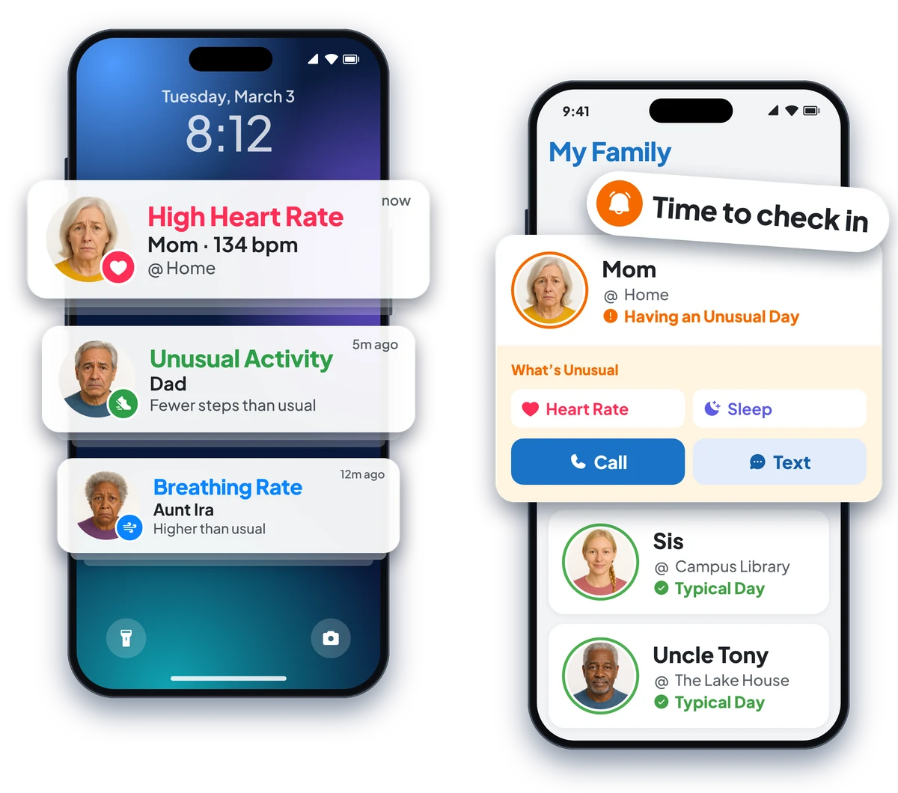
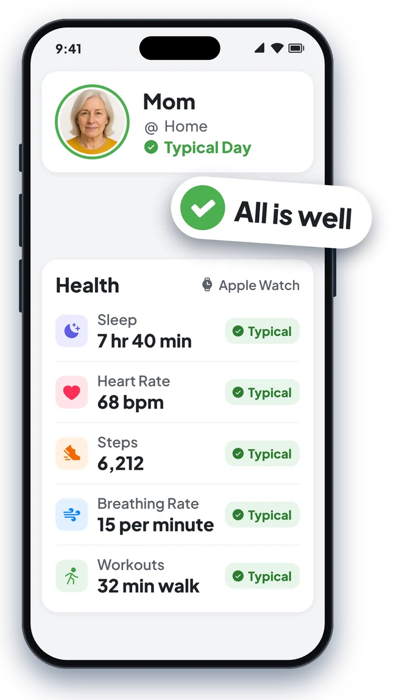

Apple Health, shared with your Looop
A heads-up when their heart, breathing or sleep looks off. Only if they choose.
Their Apple Watch already notices a lot. With Looop, your Loved One can choose to share some of it with family, so a racing heart or a rough night doesn't go unnoticed. No charts to read. Just a gentle heads-up when something looks different for them, so you know when to call.

"Would I even know if Mom's heart was racing?"
Health alerts that tell you when to check in
Straight to your phone, the moment it matters.
- High or low heart rate. A heads-up if their heart rate goes over 130 or under 40 beats a minute.
- Breathing rate. A heads-up if they're breathing much faster or slower than normal.
- Unusual Day. If their sleep, heart rate or activity looks different from their own normal, you hear about it that evening.
- Loud places. A heads-up when they've been somewhere loud enough to harm their hearing.
Looop isn't a medical device and doesn't detect emergencies. If you think someone is in danger, call 911.

"Is Mom sleeping okay lately?"
Their health, in plain language
Typical or Unusual. No charts to decode.
Open their card to see today's sleep, including deep, REM and light sleep and naps; heart rate, with the day's high and low; breathing rate; steps and walking time; and workouts.
Every stat is marked Typical or Unusual, based on that person's own patterns. A night owl isn't compared to an early riser. Heart notifications from Apple Watch, like a high, low or irregular rhythm, show up there too.

"Can I stop worrying when they don't text back?"
Peace of mind, for both of you
Less guessing. Fewer "just checking" calls.
Quiet when all is well
No notification means their day looks typical. You can stop wondering and get on with yours.
A heads-up when it counts
A racing heart, a sleepless night or an unusual day. You'll know, even if they'd rather not worry anyone.
The whole family in the loop
Everyone in your Looop who has health alerts on gets the same heads-up, so one person isn't carrying it alone.
Independence for them
They live their day. No daily check-in texts, no buttons to press, no app to open. Looop speaks up only when something looks off.
"Does Dad have to share everything?"
Always their choice
Health sharing is optional, and they can change their mind anytime.
- Health details are shared only if your Loved One turns them on. Skip it, and everything else in Looop still works.
- Only the people in their Looop see it. Before you invite anyone, walk through it together so there are no surprises.
- Looop never sells your data and doesn't work with advertisers. Health data is never used for ads.
- They can stop sharing anytime in the Health app, and leave the group whenever they like.
"Is this going to be a whole project?"
Set up in about a minute
No pairing. No extra accounts.
"Does it work with Dad's Garmin?"
Works with Apple Watch and the devices they already wear
If it syncs to Apple Health, Looop can use it.
Apple Watch
The simplest setup. Heart rate, breathing rate, sleep, workouts and loud-place notifications flow straight into Apple Health, with nothing else to install.
Fitness watches and bands
- Whoop
- Garmin, through Garmin Connect
- Fitbit, through the Google Health app (from August 2026)
- Polar, through Polar Flow
- Coros
- Suunto
- Amazfit, through the Zepp app
- Withings ScanWatch
Other health devices
- Withings scales and blood pressure cuffs
- Dexcom and FreeStyle Libre glucose monitors
- Eight Sleep, for sleep data
Looop reads sleep, heart rate, breathing rate, steps, walking distance, exercise time and workouts from Apple Health. Each device decides what it sends to Apple Health, so check its app's Apple Health settings. Readings Looop doesn't use yet, like weight, blood pressure and glucose, stay in Apple Health.
Questions, answered
Does my Loved One need an Apple Watch?
No. An iPhone on its own counts steps and walking. For heart rate, breathing and sleep, they'll need an Apple Watch or another device that shares with Apple Health.
Is health sharing optional?
Yes. Health details are shared only if your Loved One turns them on. It's their choice, and they can change their mind.
How do they stop sharing?
In the Health app on their iPhone, tap their profile picture, then Apps, then Looop, and turn off what they don't want to share. They can turn it back on the same way.
Who sees their health details?
Only the people in their Looop. Each person picks which alerts they get, and can turn health alerts off for anyone with one tap.
Does Looop sell health data?
No. Looop never sells your data and doesn't work with advertisers. Families aren't the product.
Does Looop detect emergencies?
No. Looop isn't a medical device. It gives you a heads-up when something seems off, so you know when to check in. If you think someone is in danger, call 911.
Know when to check in.
Quiet when all is well. A heads-up when it's worth a call.